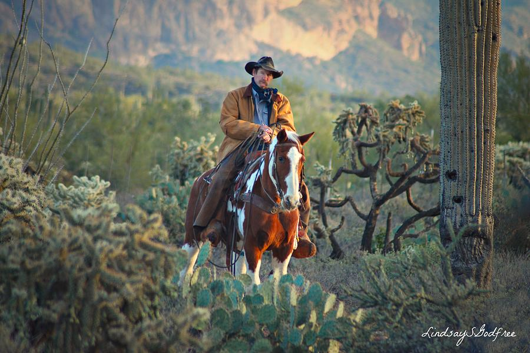

Willkommen in Tucson! Entdecken Sie akademische Möglichkeiten, lernen Sie Studierende mit unterschiedlichen Hintergründen kennen und erleben Sie das Leben im sonnigen Arizona.
An der University of Arizona kann man viele verschiedene Fächer studieren. Es gibt Informatik, Ingenieurwesen, Pflege und Wirtschaft. Diese Studienfächer passen zu beliebten Berufen in Deutschland. Geschäft ist ein beliebtes Studienfach in Deutschland.
Das Eller College of Management ist gut für Wirtschaft. Man kann an der U of A studieren. Du kannst dich auf deine Karriere vorbereiten.
An der U of A gibt es ein deutsches Programm. Es gibt viele Veranstaltungen kann man Leute kennenlernen. Es gibt auch einen deutschen Club an der Universität. Alle sind willkommen. Auch Menschen aus Tucson können kommen. Bei Spieleabenden kann man Deutsch sprechen und Freunde finden. Es gibt auch ein deutsches Restaurant. Es heißt Biergarten. Es ist 12 Minuten von der Universität.
Die University of Arizona hat 22 Wohnheime auf dem Campus. Möbel, Hausanschlüsse und Internet sind alle inbegriffen. Es gibt Apartments außerhalb des Campus sind The Hub, The Parker, Oliv, und The Cottages.
International Studenten zahlen jährlich $44.400. Wohnbau und Essen sind jährlich $17.770. Bücher und Materialien sind jährlich $600-$18.000. International Studenten benötigen eine Krankenversicherung, jährlich $2.765. Der Internatonal Student Gebühr ist $400. Es gibt die Global Wildcat Award für International Studenten mit guten Leistungen.
Tucson ist ein Stadt in die Natur. Das Wandern in der Sonora-Wüste ist eine populär Aktivität. Tucson ist auch ein UNESCO-Stadt der Gastronomie anerkannt. Es gibt mehrfach Mexicanische Restaurants in die Stadt.
Mehr populär aktivitäten sind das Pima Air and Space Museum für Militärluftfahrt, Sabino Canyon für Wandern, 'A' Mountain für die Stadttansicht, University Blvd. für Nachtleben, und das Arizona-Sonora Desert Museum für ein Tiergarten und Naturmuseum.
In die Vereinigten Staaten haben die Schulen oft Hausaufgaben. Im Sommer gibt es Sommerferien und das Absclussexamen ist vor dem Sommer.
Die Sommerferien sind vom 15. Mai bis zum 23. August; das Herbstsemester ist vom 24. August bis zum 9. Dezember; und das Frühjahrssemester ist vom 14. Januar bis zum 14. Mai. Der Unterricht ist ganzen Tag, und ein Student kann seine Kurse wählen, sodass sein Stundenplan variieren kann.

Es gibt Unterschiede zwischen der amerikanischen und der deutschen Kultur. Mitteilung und kritik ist mehr hoflich und kleiner direkt in Amerika. Amerika hat Hustle-Kultur. Sonntage sind erholsam in Deutschland aber in Amerika Sonntage sind nicht unbedingt Ruhetage.
Kultur in Amerika ist flexibel und nachsichtig mit regeln und pünktlichkeit. Amerikaners auch sind freundlich, laut und nicht zurückhaltend. Transportwesen sind primär mit Auto.
Weitere Ressourcen finden Sie auf der offiziellen Website der University of Arizona.